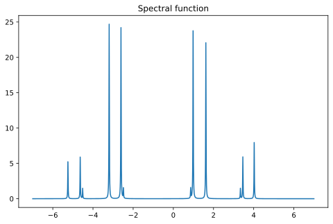
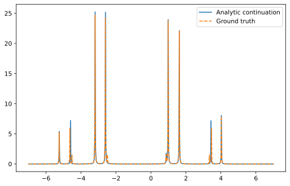

Analytic continuation of Hubbard dimer
In this notebook, we illustrate how to conduct analytic continuation using adapol. We took the strongly correlated hubbard dimer model as an example. On the one hand, it serves as a nontrivial test case which features several closely spaced peaks that could be very challenging. On the other hand, its modest size allows for exact diagonalization, enabling the calculation of ground truth results for rigorous benchmarking. This example was also used as benchmark tests in
this and this paper.
Let us consider the following Hamiltonian:
where
Here \(\hat n_{i\sigma} = \hat c_{i\sigma}^\dagger \hat c_{i\sigma}\) is the number operator.
The parameters are taken as follows:
[2]:
from triqs.operators import c, c_dag,n
from triqs.atom_diag import AtomDiag, atomic_g_w, atomic_g_iw
from itertools import product
import matplotlib.pyplot as plt
import numpy as np
t = 1.0
mu = 0.7
h = 0.3
U_a = 0.5
mu_a = 0.2
h_a = 0.03
beta = 25.0
U = 5.0
Using triqs, we can construct the Hamiltonian and obtain the Green’s function and spectral function through exact diagonalization:
[3]:
f_ops = [(sn,on) for sn, on in product(('up','down'),range(2))]
H_0 = - t * (c_dag('up', 0) * c('up', 1) + c_dag('up', 1) * c('up', 0) )
H_0 += - t * (c_dag('down', 0) * c('down', 1) + c_dag('down', 1) * c('down', 0) )
H_0 += - mu * (n('up', 0) + n('down', 0)) - mu * (n('up', 1) + n('down', 1))
H_1 = (U + U_a) * (n('up', 0) * n('down', 0) ) + (U - U_a) * (n('up', 1) * n('down', 1) )
H_1 -= (U/2.0) * (n('up', 0) + n('down', 0) + n('up', 1) + n('down', 1) )
H_1 += h * (n('up', 0) - n('down', 0) + n('up', 1) - n('down', 1) )
H_1 += mu_a * (n('up', 0) + n('down', 0) - n('up', 1) - n('down', 1) )
H_1 += h_a * (n('up', 0) - n('down', 0) - n('up', 1) + n('down', 1) )
H = H_0 + H_1
ad = AtomDiag(H, f_ops)
gf_struct = [('down',2),('up',2)] # fix the bug in the old version by changing orb_names to len(orb_names).
G_w = atomic_g_w(ad, beta, gf_struct, (-7, 7), 4000, 0.01)
Tr_G_w = G_w['up'][0,0] + G_w['down'][0,0] + G_w['up'][1,1] + G_w['down'][1,1]
wmesh = np.array([w.value for w in Tr_G_w.mesh])
plt.plot(wmesh, -np.imag(Tr_G_w.data)/np.pi)
plt.title("Spectral function")
plt.show()

Let us also construct the Matsubara Green’s function data:
[4]:
G_iw = atomic_g_iw(ad, beta, gf_struct, 500)
TrG_iw = G_iw['up'][0,0] + G_iw['down'][0,0] + G_iw['up'][1,1] + G_iw['down'][1,1]
iwmesh = np.array([iw.value.value for iw in TrG_iw.mesh])
Let us first show how to conduct analytic continuation through the anacont function:
[5]:
from adapol import approx_freq_aaa
from adapol.sop import SumOfSimplePoles
poles, residues, err = approx_freq_aaa(TrG_iw.data, iwmesh, max_n_poles=12)
sop = SumOfSimplePoles(poles=poles, residues=residues)
Spec_approx = -np.imag(sop(wmesh+0.01*1j))/np.pi
plt.plot(wmesh, Spec_approx)
plt.plot(wmesh, -np.imag(Tr_G_w.data)/np.pi, "--",2)
plt.legend(["Analytic continuation", "Ground truth"])
plt.show()

Next let’s see how to conduct analytic continuation through the triqs interface:
[6]:
from adapol.triqs import approx_gf_imfreq_aaa
poles, residues, err = approx_gf_imfreq_aaa(TrG_iw, max_n_poles=12)
sop2 = SumOfSimplePoles(poles=poles, residues=residues)
Spec_approx2 = -np.imag(sop2(wmesh+0.01*1j))/np.pi
plt.plot(wmesh, Spec_approx2)
plt.plot(wmesh, -np.imag(Tr_G_w.data)/np.pi, "--",2)
plt.legend(["Analytic continuation", "Ground truth"])
plt.show()